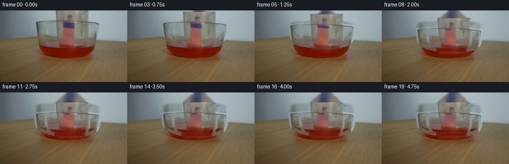
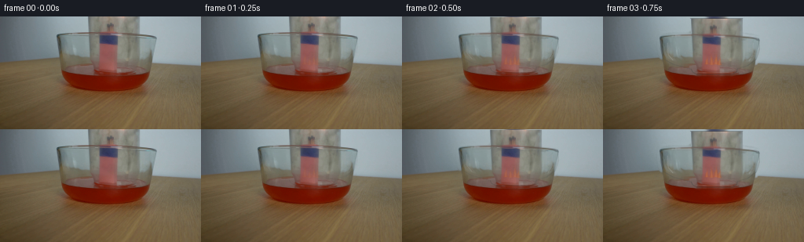

CODING AGENTS AS PIXEL WORLD MODELS
traex/GPT-5.6-Sol · 0165
点击播放 · 原生 RGB 像素
逐轮保存的候选
回放视频、检查图与代码变化。
每份候选均可单独播放。实际图片检查记录在下方工具轨迹中。
候选 01播放与检查图
点击播放 · 原生 RGB 像素

展开代码变化
--- 上一保存版本
+++ 本次保存版本
@@ -0,0 +1,252 @@
+from pathlib import Path
+import math
+import cv2
+import numpy as np
+from PIL import Image, ImageDraw
+import artifact_io
+
+HERE = Path(__file__).resolve().parent
+W, H = 256, 144
+N = 20
+
+
+def smoothstep(x):
+ x = float(np.clip(x, 0.0, 1.0))
+ return x * x * (3.0 - 2.0 * x)
+
+
+def aa_mask_polygon(points, blur=0.55, scale=4):
+ im = Image.new("L", (W * scale, H * scale), 0)
+ d = ImageDraw.Draw(im)
+ d.polygon([(round(x * scale), round(y * scale)) for x, y in points], fill=255)
+ im = im.resize((W, H), Image.Resampling.LANCZOS)
+ a = np.asarray(im, np.float32) / 255.0
+ if blur:
+ a = cv2.GaussianBlur(a, (0, 0), blur)
+ return np.clip(a, 0, 1)
+
+
+def line_mask(lines, widths, blur=0.45):
+ m = np.zeros((H, W), np.uint8)
+ for pts, width in zip(lines, widths):
+ p = np.round(np.asarray(pts)).astype(np.int32)
+ cv2.polylines(m, [p], False, 255, width, cv2.LINE_AA)
+ if blur:
+ m = cv2.GaussianBlur(m, (0, 0), blur)
+ return m.astype(np.float32) / 255.0
+
+
+def shift(arr, dy):
+ return cv2.warpAffine(arr, np.float32([[1, 0, 0], [0, 1, dy]]),
+ (W, H), flags=cv2.INTER_LINEAR,
+ borderMode=cv2.BORDER_CONSTANT, borderValue=0)
+
+
+def composite(dst, src, alpha):
+ a = np.asarray(alpha, np.float32)
+ if a.ndim == 2:
+ a = a[..., None]
+ return dst * (1.0 - a) + src * a
+
+
+def overlay_color(dst, rgb, alpha):
+ col = np.empty_like(dst, dtype=np.float32)
+ col[:] = rgb
+ return composite(dst, col, alpha)
+
+
+def draw_poly_rgba(layer, xy, fill):
+ # Coordinates are rendered at 4x for clean, photographic-scale edges.
+ sc = 4
+ hi = Image.new("RGBA", (W * sc, H * sc), (0, 0, 0, 0))
+ d = ImageDraw.Draw(hi)
+ d.polygon([(int(round(x * sc)), int(round(y * sc))) for x, y in xy], fill=fill)
+ hi = hi.resize((W, H), Image.Resampling.LANCZOS)
+ rgba = np.asarray(hi, np.float32)
+ return composite(layer, rgba[..., :3], rgba[..., 3] / 255.0)
+
+
+def draw_lines_rgba(layer, segments):
+ sc = 4
+ hi = Image.new("RGBA", (W * sc, H * sc), (0, 0, 0, 0))
+ d = ImageDraw.Draw(hi)
+ for xy, fill, width in segments:
+ d.line([(int(round(x * sc)), int(round(y * sc))) for x, y in xy],
+ fill=fill, width=max(1, int(round(width * sc))), joint="curve")
+ hi = hi.resize((W, H), Image.Resampling.LANCZOS)
+ rgba = np.asarray(hi, np.float32)
+ return composite(layer, rgba[..., :3], rgba[..., 3] / 255.0)
+
+
+def flame_layer(frame, i, covered):
+ """Small turbulent flames anchored to the visible central bundle."""
+ # The source already contains the broad warm glow. These low-opacity tongues
+ # clarify the lit match heads without changing the source's subdued grading.
+ if covered >= 0.98:
+ return frame
+ strength = (1.0 - covered) ** 0.65
+ bases = [(132.0, 61.0), (138.2, 61.5), (144.0, 61.0), (148.0, 62.0)]
+ for k, (x, yb) in enumerate(bases):
+ phase = 0.91 * i + 1.71 * k
+ lean = 1.6 * math.sin(phase)
+ height = (13.0 + 2.6 * math.sin(phase * 1.37 + .8)) * strength
+ width = (3.0 + .5 * math.cos(phase)) * (0.45 + .55 * strength)
+ tipy = yb - height
+ outer = [(x - width, yb), (x - width * .72, yb - height * .40),
+ (x + lean * .25, yb - height * .68), (x + lean, tipy),
+ (x + width * .55, yb - height * .48), (x + width, yb)]
+ frame = draw_poly_rgba(frame, outer, (193, 80, 23, int(54 * strength)))
+ inner = [(x - width * .43, yb), (x - width * .28, yb - height * .34),
+ (x + lean * .48, yb - height * .72),
+ (x + width * .32, yb - height * .30), (x + width * .46, yb)]
+ frame = draw_poly_rgba(frame, inner, (232, 150, 69, int(50 * strength)))
+ # Shared glow around the match heads.
+ yy, xx = np.mgrid[:H, :W]
+ glow = np.exp(-(((xx - 140.0) / 17.0) ** 2 + ((yy - 54.0) / 16.0) ** 2) * 2.0)
+ frame = overlay_color(frame, (188, 83, 31), glow * .055 * strength)
+ return frame
+
+
+def smoke_layer(frame, i, extinction):
+ if extinction <= 0:
+ return frame
+ segs = []
+ for k in range(3):
+ x0 = 136 + 5 * k
+ y0 = 55 + (k % 2)
+ phase = .7 * i + 1.9 * k
+ pts = []
+ for q in range(8):
+ y = y0 - q * 3.2
+ x = x0 + math.sin(q * .9 + phase) * (1.1 + .22 * q)
+ pts.append((x, y))
+ a = int(30 * extinction * (1 - .18 * k))
+ segs.append((pts, (75, 72, 66, a), 1.0 + .2 * k))
+ return draw_lines_rgba(frame, segs)
+
+
+def build_frames():
+ src = np.asarray(Image.open(HERE / "first_frame.png").convert("RGB"), np.uint8)
+ srcf = src.astype(np.float32)
+
+ # Opaque fingers/holder visible above the jar. The irregular lower edge avoids
+ # the cut-out appearance of moving a rectangular crop.
+ hand_poly = [(111, 0), (178, 0), (178, 18), (188, 22), (177, 25),
+ (163, 23), (156, 26), (145, 23), (135, 25), (123, 22),
+ (112, 20)]
+ hand_a = aa_mask_polygon(hand_poly, .38)
+
+ # Trace only the actual glass highlights and boundaries from the first frame.
+ glass_paths = [
+ [(73, 23), (72, 34), (74, 47), (79, 54), (91, 59), (108, 63), (116, 65)],
+ [(198, 24), (199, 35), (197, 48), (193, 56), (184, 61), (169, 65)],
+ [(74, 23), (91, 21), (111, 21)],
+ [(178, 22), (190, 23), (198, 25)],
+ [(115, 64), (115, 68), (119, 70), (165, 70), (170, 67), (169, 64)],
+ [(119, 70), (164, 70)],
+ [(91, 28), (92, 48), (99, 57)],
+ [(178, 28), (178, 48), (174, 58)],
+ ]
+ glass_a = line_mask(glass_paths, [5, 5, 4, 4, 4, 3, 3, 3], .55)
+ # Do not extract the central matches or their flames with the glass.
+ protect = aa_mask_polygon([(118, 18), (164, 18), (171, 72), (108, 72)], .4)
+ glass_a *= (1.0 - protect * .88)
+
+ # Build a clean static plate by replacing only vacated moving pixels.
+ clean_mask = np.uint8(np.clip(np.maximum(hand_a, glass_a * .88), 0, 1) * 255)
+ clean = cv2.inpaint(cv2.cvtColor(src, cv2.COLOR_RGB2BGR), clean_mask, 5,
+ cv2.INPAINT_TELEA)
+ clean = cv2.cvtColor(clean, cv2.COLOR_BGR2RGB).astype(np.float32)
+ # Keep the entire bowl and match bundle pixel-faithful.
+ preserve = aa_mask_polygon([(70, 59), (111, 54), (118, 23), (163, 23),
+ (173, 55), (199, 61), (204, 103), (71, 104)], .8)
+ clean = composite(clean, srcf, preserve * .83)
+
+ frames = [src.copy()]
+ for i in range(1, N):
+ # Deliberate lowering from 0.25 s to 3.0 s, then a steady sealed hold.
+ motion = smoothstep((i - .5) / 11.0)
+ dy = 20.0 * motion
+ reveal = min(1.0, i / 3.0)
+ frame = clean.copy()
+
+ # Very subtle transparent fill: blur/refract background behind the glass.
+ jar_poly = [(76, 23 + dy), (198, 24 + dy), (198, 45 + dy),
+ (193, 55 + dy), (181, 62 + dy), (170, 65 + dy),
+ (170, 69 + dy), (165, 71 + dy), (119, 71 + dy),
+ (114, 68 + dy), (114, 64 + dy), (91, 59 + dy),
+ (79, 53 + dy), (74, 43 + dy)]
+ jar_fill = aa_mask_polygon(jar_poly, .65)
+ refr = cv2.GaussianBlur(frame, (0, 0), .72)
+ # A one-pixel optical displacement near the side walls.
+ refr = cv2.warpAffine(refr, np.float32([[1, 0, .3], [0, 1, 0]]),
+ (W, H), flags=cv2.INTER_LINEAR,
+ borderMode=cv2.BORDER_REFLECT)
+ frame = composite(frame, refr, jar_fill * .12)
+ frame = overlay_color(frame, (172, 185, 187), jar_fill * .035)
+
+ # Move extracted hand and glass photography to preserve source realism.
+ shand = shift(hand_a, dy)
+ sglass = shift(glass_a, dy)
+ pix = shift(srcf, dy)
+ frame = composite(frame, pix, sglass * .88)
+ frame = composite(frame, pix, shand * .98)
+
+ # Fine analytic edge accents, matching the gray, low-contrast source glass.
+ d = dy
+ segs = [
+ ([(74, 24+d), (73, 39+d), (77, 51+d), (89, 58+d), (111, 64+d)], (72, 78, 76, 70), 1.05),
+ ([(198, 25+d), (199, 39+d), (195, 52+d), (184, 60+d), (171, 64+d)], (75, 78, 73, 66), 1.05),
+ ([(78, 24+d), (96, 22+d), (112, 22+d)], (224, 229, 224, 50), .85),
+ ([(178, 22+d), (190, 23+d), (197, 26+d)], (224, 230, 229, 48), .85),
+ ([(112, 64+d), (114, 68+d), (119, 71+d), (165, 71+d), (170, 68+d), (171, 64+d)], (61, 66, 63, 76), 1.15),
+ ([(119, 69+d), (165, 69+d)], (220, 220, 207, 46), .8),
+ ([(82, 31+d), (83, 46+d), (89, 53+d)], (234, 239, 235, 42), .7),
+ ([(191, 31+d), (191, 46+d), (186, 54+d)], (231, 237, 235, 37), .7),
+ ]
+ frame = draw_lines_rgba(frame, segs)
+
+ # Jar reaches the bowl at about 2.5 s; oxygen then dwindles over ~1 s.
+ sealed = smoothstep((i - 9.2) / 3.6)
+ extinction = smoothstep((i - 11.2) / 4.0)
+ covered = max(0.0, extinction)
+ frame = flame_layer(frame, i, covered)
+
+ # Gently reduce the pre-existing warm flame patch as it goes out, while
+ # leaving the matchsticks themselves intact below y=58.
+ if extinction > 0:
+ fm = aa_mask_polygon([(125, 35), (132, 31), (142, 34), (151, 31),
+ (153, 45), (149, 58), (126, 58)], 1.1)
+ gray = cv2.cvtColor(cv2.cvtColor(np.uint8(np.clip(frame,0,255)), cv2.COLOR_RGB2GRAY),
+ cv2.COLOR_GRAY2RGB).astype(np.float32)
+ gray *= np.array([.88, .86, .80], np.float32)
+ frame = composite(frame, gray, fm * (.20 * extinction))
+ frame = smoke_layer(frame, i, extinction)
+
+ # Classic pressure demonstration: after extinction, a modest column of
+ # the red liquid rises inside the mouth of the sealed jar.
+ rise = smoothstep((i - 14.0) / 5.0)
+ if rise > 0:
+ liquid_y = 91.0 - 8.0 * rise
+ yy, xx = np.mgrid[:H, :W]
+ inside = (((xx - 142.0) / 25.5) ** 2 + ((yy - liquid_y) / 4.1) ** 2) <= 1.0
+ # Restrict to neck/interior and use the source liquid's dark red grade.
+ la = cv2.GaussianBlur(inside.astype(np.float32), (0, 0), .75) * (.38 * rise)
+ frame = overlay_color(frame, (107, 26, 7), la)
+ rim = np.zeros((H, W), np.uint8)
+ cv2.ellipse(rim, (142, int(round(liquid_y))), (25, 3), 0, 180, 360,
+ 255, 1, cv2.LINE_AA)
+ frame = overlay_color(frame, (159, 64, 28), rim.astype(np.float32)/255 * .34 * rise)
+
+ # A gradual reveal avoids any extraction pop between exact frame 0 and 1.
+ frame = srcf * (1.0 - reveal) + frame * reveal
+ frames.append(np.uint8(np.clip(np.rint(frame), 0, 255)))
+
+ out = np.stack(frames, axis=0)
+ assert out.shape == (20, 144, 256, 3) and out.dtype == np.uint8
+ assert np.array_equal(out[0], src)
+ return out
+
+
+if __name__ == "__main__":
+ artifact_io.save(build_frames(), HERE)
候选 02播放与检查图
点击播放 · 原生 RGB 像素


展开代码变化
--- 上一保存版本
+++ 本次保存版本
@@ -85,7 +85,9 @@
if covered >= 0.98:
return frame
strength = (1.0 - covered) ** 0.65
- bases = [(132.0, 61.0), (138.2, 61.5), (144.0, 61.0), (148.0, 62.0)]
+ # The match bundle runs upward from the bowl to roughly y=36; flames sit
+ # above those heads rather than down at the liquid line.
+ bases = [(132.0, 36.5), (138.2, 37.0), (144.0, 36.3), (148.0, 37.2)]
for k, (x, yb) in enumerate(bases):
phase = 0.91 * i + 1.71 * k
lean = 1.6 * math.sin(phase)
@@ -102,7 +104,7 @@
frame = draw_poly_rgba(frame, inner, (232, 150, 69, int(50 * strength)))
# Shared glow around the match heads.
yy, xx = np.mgrid[:H, :W]
- glow = np.exp(-(((xx - 140.0) / 17.0) ** 2 + ((yy - 54.0) / 16.0) ** 2) * 2.0)
+ glow = np.exp(-(((xx - 140.0) / 17.0) ** 2 + ((yy - 28.0) / 15.0) ** 2) * 2.0)
frame = overlay_color(frame, (188, 83, 31), glow * .055 * strength)
return frame
@@ -113,7 +115,7 @@
segs = []
for k in range(3):
x0 = 136 + 5 * k
- y0 = 55 + (k % 2)
+ y0 = 35 + (k % 2)
phase = .7 * i + 1.9 * k
pts = []
for q in range(8):
@@ -157,10 +159,13 @@
clean = cv2.inpaint(cv2.cvtColor(src, cv2.COLOR_RGB2BGR), clean_mask, 5,
cv2.INPAINT_TELEA)
clean = cv2.cvtColor(clean, cv2.COLOR_BGR2RGB).astype(np.float32)
- # Keep the entire bowl and match bundle pixel-faithful.
- preserve = aa_mask_polygon([(70, 59), (111, 54), (118, 23), (163, 23),
- (173, 55), (199, 61), (204, 103), (71, 104)], .8)
- clean = composite(clean, srcf, preserve * .83)
+ # Keep the bowl and narrow match/flame bundle pixel-faithful, but not the
+ # original side walls of the jar (those need to vacate cleanly as it moves).
+ preserve_match = aa_mask_polygon([(116, 9), (163, 9), (171, 71), (108, 71)], .65)
+ preserve_bowl = aa_mask_polygon([(68, 59), (109, 55), (118, 61), (163, 61),
+ (174, 55), (201, 61), (205, 104), (70, 104)], .8)
+ preserve = np.maximum(preserve_match, preserve_bowl)
+ clean = composite(clean, srcf, preserve * .88)
frames = [src.copy()]
for i in range(1, N):
@@ -215,12 +220,12 @@
# Gently reduce the pre-existing warm flame patch as it goes out, while
# leaving the matchsticks themselves intact below y=58.
if extinction > 0:
- fm = aa_mask_polygon([(125, 35), (132, 31), (142, 34), (151, 31),
- (153, 45), (149, 58), (126, 58)], 1.1)
+ fm = aa_mask_polygon([(126, 37), (124, 25), (130, 17), (137, 11),
+ (145, 15), (152, 23), (151, 38)], 1.0)
gray = cv2.cvtColor(cv2.cvtColor(np.uint8(np.clip(frame,0,255)), cv2.COLOR_RGB2GRAY),
cv2.COLOR_GRAY2RGB).astype(np.float32)
gray *= np.array([.88, .86, .80], np.float32)
- frame = composite(frame, gray, fm * (.20 * extinction))
+ frame = composite(frame, gray, fm * (.48 * extinction))
frame = smoke_layer(frame, i, extinction)
# Classic pressure demonstration: after extinction, a modest column of
候选 03播放与检查图
可观测工具轨迹
实际执行的命令与返回图片。
命令 1exit 0
/bin/bash -lc "cat GENERATION_RULES.md && printf '\\n--- PROMPT ---\\n' && cat prompt.txt"
命令 2exit 1
/bin/bash -lc "find . -maxdepth 2 -type f -printf '%p\\n' | sort && printf '\\n--- TOOLS ---\\n' && command -v ffmpeg && command -v python3"
命令 3exit 0
/bin/bash -lc "python3 - <<'PY'
from PIL import Image
im=Image.open('first_frame.png')
print('format',im.format,'mode',im.mode,'size',im.size)
print('extrema',im.getextrema())
PY"命令 4exit 0
/bin/bash -lc "sed -n '1,240p' artifact_io.py"
命令 5exit 0
/bin/bash -lc "python3 - <<'PY' mods=['numpy','PIL','cv2','scipy','skimage','imageio'] for x in mods: try: m=__import__(x); print(x,'OK',getattr(m,'__version__','')) except Exception as e: print(x,'NO',e) PY command -v ffmpeg || true command -v convert || true command -v identify || true"
命令 6exit 0
/bin/bash -lc "python3 - <<'PY'
from PIL import Image
import numpy as np
im=np.array(Image.open('first_frame.png'))
# print representative RGB over 8x8 blocks using coarse color categories and luminance
h,w,_=im.shape
chars=' .:-=+*#%@'
print('LUMINANCE 64x36')
for yy in range(0,h,4):
s=''
for xx in range(0,w,4):
p=im[yy:yy+4,xx:xx+4].mean((0,1)); lum=.2126*p[0]+.7152*p[1]+.0722*p[2]
s+=chars[min(9,int(lum/256*10))]
print(s)
print('\\nCOLOR 64x36 K= black/dark, W graywhite, R red, O orange, Y yellow, B blue, G green, C cyan, M magenta')
for yy in range(0,h,4):
s=''
for xx in range(0,w,4):
r,g,b=im[yy:yy+4,xx:xx+4].mean((0,1)); mx=max(r,g,b); mn=min(r,g,b)
if mx<45:c='K'
elif mx-mn<18:c='W' if mx>145 else 'k'
elif r>g*1.45 and r>b*1.5:c='R'
elif r>g*1.15 and g>b*1.2:c='O'
elif r>b*1.4 and g>b*1.4:c='Y'
elif b>r*1.25 and b>g*1.12:c='B'
elif g>r*1.18 and g>b*1.12:c='G'
elif b>r*1.15 and g>r*1.1:c='C'
elif r>b*1.12 and b>g*1.05:c='M'
else:c='.'
s+=c
print(s)
PY"命令 7exit 0
/bin/bash -lc "python3 - <<'PY'
import cv2,numpy as np
im=cv2.imread('first_frame.png')
g=cv2.cvtColor(im,cv2.COLOR_BGR2GRAY)
e=cv2.Canny(g,35,90)
# maxpool edges in 2x2, emit 128x72
for y in range(0,144,2):
print(''.join('#' if e[y:y+2,x:x+2].max() else ' ' for x in range(0,256,2)))
print('--- contours largest ---')
cs,_=cv2.findContours(e,cv2.RETR_LIST,cv2.CHAIN_APPROX_SIMPLE)
for c in sorted(cs,key=cv2.contourArea,reverse=True)[:30]:
print('area %.1f len %d bbox'% (cv2.contourArea(c),len(c)),cv2.boundingRect(c))
PY"命令 8exit 0
/bin/bash -lc "python3 - <<'PY'
import cv2,numpy as np
from PIL import Image
im=cv2.imread('first_frame.png'); rgb=im[:,:,::-1]
# kmeans 16 colors deterministic
Z=rgb.reshape(-1,3).astype(np.float32)
cv2.setRNGSeed(2)
_,lab,cen=cv2.kmeans(Z,16,None,(cv2.TERM_CRITERIA_EPS+cv2.TERM_CRITERIA_MAX_ITER,50,.2),10,cv2.KMEANS_PP_CENTERS)
lab=lab.reshape(rgb.shape[:2]); cen=np.uint8(cen)
order=np.argsort([(lab==i).sum() for i in range(16)])[::-1]
print('clusters rank: id,count,rgb,bbox')
for i in order:
ys,xs=np.where(lab==i); print(i,len(xs),cen[i].tolist(),[xs.min(),ys.min(),xs.max(),ys.max()])
syms='0123456789ABCDEF'
mp={i:syms[k] for k,i in enumerate(order)}
print('map legend rank-symbol colors above')
for y in range(0,144,3):
print(''.join(mp[np.bincount(lab[y:y+3,x:x+3].ravel(),minlength=16).argmax()] for x in range(0,256,3)))
PY"命令 9exit 1
/bin/bash -lc "python3 - <<'PY'
from PIL import Image
import numpy as np
im=np.array(Image.open('first_frame.png'))
pts=[(0,0),(50,20),(100,20),(130,10),(150,10),(180,20),(220,20),(100,60),(125,60),(140,60),(155,60),(175,60),(110,80),(125,80),(140,80),(155,80),(175,80),(90,100),(120,100),(140,100),(170,100),(200,100),(128,120)]
for x,y in pts: print((x,y),im[y,x].tolist())
# threshold region summaries
r,g,b=im.transpose(2,0,1)
for name,m in [('red',(r>g*1.35)&(r>b*1.5)&(r>90)),('orange',(r>90)&(g>35)&(r>g*1.2)&(g>b*1.25)),('blue',(b>r*1.25)&(b>g*1.1)&(b>60)),('bright',(r.astype(int)+g+b>470)),('dark',(r.astype(int)+g+b<100))]:
n,labels,stats,cents=__import__('cv2').connectedComponentsWithStats(m.astype('uint8'),8)
print('\\n',name,m.sum())
for s,c in sorted(zip(stats[1:],cents[1:]),key=lambda z:z[0,4],reverse=True)[:12]: print(s.tolist(),c.round(1).tolist())
PY"命令 10exit 0
/bin/bash -lc "python3 - <<'PY'
import cv2,numpy as np
im=cv2.imread('first_frame.png'); g=cv2.cvtColor(im,cv2.COLOR_BGR2GRAY); e=cv2.Canny(g,20,60)
lines=cv2.HoughLinesP(e,1,np.pi/180,threshold=12,minLineLength=8,maxLineGap=3)
for l in sorted(lines[:,0].tolist(),key=lambda p:(p[1]+p[3],p[0])):
x1,y1,x2,y2=l; L=((x2-x1)**2+(y2-y1)**2)**.5
print('%3d,%3d -> %3d,%3d L=%5.1f ang=%6.1f'%(*l,L,np.degrees(np.arctan2(y2-y1,x2-x1))))
PY"命令 11exit 0
/bin/bash -lc "python3 - <<'PY'
from PIL import Image
import numpy as np
im=np.array(Image.open('first_frame.png'))
# samples at every 4 pixels in central object; map nearest descriptive 8 color by chroma/luma; include values row mean/change
for y in range(0,112,4):
print(f'{y:03}',end=' ')
for x in range(64,208,4):
p=im[y:y+4,x:x+4].mean((0,1)); r,g,b=p; lum=p.mean(); ch=max(p)-min(p)
if lum<50:c='D'
elif r>g+45 and r>b+60:c='R'
elif r>g+15 and g>b+10:c='o'
elif b>r+15:c='B'
elif r>b+10 and b>g:c='p'
elif lum>165:c='W'
elif lum>135:c='L'
elif lum>110:c='m'
elif lum>85:c='d'
else:c='k'
print(c,end='')
print()
PY"命令 12exit 0
/bin/bash -lc "python3 - <<'PY'
from PIL import Image
import numpy as np,cv2
im=np.array(Image.open('first_frame.png'))
r,g,b=im.transpose(2,0,1)
for name,m in [('red',(r.astype(float)>g*1.35)&(r.astype(float)>b*1.5)&(r>90)),('orange',(r>90)&(g>35)&(r.astype(float)>g*1.2)&(g.astype(float)>b*1.25)),('blue',(b.astype(float)>r*1.25)&(b.astype(float)>g*1.1)&(b>60)),('bright',(r.astype(int)+g.astype(int)+b.astype(int)>470)),('dark',(r.astype(int)+g.astype(int)+b.astype(int)<160))]:
n,labels,stats,cents=cv2.connectedComponentsWithStats(m.astype('uint8'),8)
print('\\n',name,int(m.sum()))
vals=sorted([(int(s[4]),s,c) for s,c in zip(stats[1:],cents[1:])],key=lambda z:z[0],reverse=True)
for area,s,c in vals[:12]: print('area',area,'stat',s.tolist(),'cent',c.round(1).tolist())
PY"命令 13exit 0
/bin/bash -lc "python3 - <<'PY'
from PIL import Image
import numpy as np
im=np.array(Image.open('first_frame.png'))
# For each row show high gradients in x within 50..220 and channel values every 10 central
L=(.2126*im[:,:,0]+.7152*im[:,:,1]+.0722*im[:,:,2])
print('row: edge x positions (>18 abs horizontal or vert)')
for y in range(0,111,2):
gx=np.abs(np.diff(L[y])).astype(int); gy=np.abs(L[min(y+1,143)]-L[max(y-1,0)]).astype(int)
inds=np.where(((np.r_[gx,0]>13)|(gy>20)) & (np.arange(256)>50)&(np.arange(256)<220))[0]
# groups
gr=[]
for x in inds:
if not gr or x>gr[-1][-1]+1:gr.append([x])
else:gr[-1].append(x)
print(f'{y:3}:',' '.join(f'{a[0]}-{a[-1]}' if len(a)>1 else str(a[0]) for a in gr))
print('\\nRGB table central x=70..210 step10 rows step5')
xs=list(range(70,211,10)); print('x ',xs)
for y in range(0,111,5):
print(f'y{y:03}', ['%02x%02x%02x'%tuple(im[y,x]) for x in xs])
PY"命令 14exit 0
/bin/bash -lc "python3 - <<'PY'
from PIL import Image
import numpy as np
im=np.array(Image.open('first_frame.png')).astype(int); r,g,b=im.transpose(2,0,1)
# print run coordinates masks by row 0:100
for name,m in [
('strongred',(r>g+35)&(r>b+50)),('reddish',(r>g+15)&(r>b+20)),
('darkblue',(b>r+10)&(b>g+5)),('bright',(r+g+b>500)),('dark',(r+g+b<210))]:
print('\\n',name)
for y in range(0,101,2):
xs=np.where(m[y])[0]; groups=[]
for x in xs:
if not groups or x>groups[-1][-1]+1:groups.append([int(x)])
else:groups[-1].append(int(x))
gr=[a for a in groups if len(a)>=2 and a[-1]>=60 and a[0]<=210]
if gr: print(f'{y:3}:',' '.join(f'{a[0]}-{a[-1]}' for a in gr))
PY"命令 15exit 0
/bin/bash -lc "python3 - <<'PY'
from PIL import Image
import numpy as np
im=np.array(Image.open('first_frame.png')).astype(int); r,g,b=im.transpose(2,0,1)
for y in range(0,75):
xs=np.where((r[y]-g[y]>8)&(r[y]-b[y]>10)&(r[y]>110))[0]
xs=xs[(xs>100)&(xs<180)]
if len(xs):
print(y,int(xs.min()),int(xs.max()),'maxR',int(r[y,xs].max()),'arg',int(xs[np.argmax(r[y,xs])]),'maxchroma',int(np.max(r[y,xs]-np.minimum(g[y,xs],b[y,xs]))))
# top 40 red chroma pixels center
score=(r-g)+(r-b)
flat=np.argsort(score[:75,100:180].ravel())[-50:]
for k in flat[-20:][::-1]:
y,x=divmod(int(k),80);x+=100;print((x,y),im[y,x].tolist(),'s',score[y,x])
PY"命令 16exit 0
/bin/bash -lc "cat > generate.py <<'PY'
from pathlib import Path
import math
import cv2
import numpy as np
from PIL import Image, ImageDraw
import artifact_io
HERE = Path(__file__).resolve().parent
W, H = 256, 144
N = 20
def smoothstep(x):
x = float(np.clip(x, 0.0, 1.0))
return x * x * (3.0 - 2.0 * x)
def aa_mask_polygon(points, blur=0.55, scale=4):
im = Image.new(\"L\", (W * scale, H * scale), 0)
d = ImageDraw.Draw(im)
d.polygon([(round(x * scale), round(y * scale)) for x, y in points], fill=255)
im = im.resize((W, H), Image.Resampling.LANCZOS)
a = np.asarray(im, np.float32) / 255.0
if blur:
a = cv2.GaussianBlur(a, (0, 0), blur)
return np.clip(a, 0, 1)
def line_mask(lines, widths, blur=0.45):
m = np.zeros((H, W), np.uint8)
for pts, width in zip(lines, widths):
p = np.round(np.asarray(pts)).astype(np.int32)
cv2.polylines(m, [p], False, 255, width, cv2.LINE_AA)
if blur:
m = cv2.GaussianBlur(m, (0, 0), blur)
return m.astype(np.float32) / 255.0
def shift(arr, dy):
return cv2.warpAffine(arr, np.float32([[1, 0, 0], [0, 1, dy]]),
(W, H), flags=cv2.INTER_LINEAR,
borderMode=cv2.BORDER_CONSTANT, borderValue=0)
def composite(dst, src, alpha):
a = np.asarray(alpha, np.float32)
if a.ndim == 2:
a = a[..., None]
return dst * (1.0 - a) + src * a
def overlay_color(dst, rgb, alpha):
col = np.empty_like(dst, dtype=np.float32)
col[:] = rgb
return composite(dst, col, alpha)
def draw_poly_rgba(layer, xy, fill):
# Coordinates are rendered at 4x for clean, photographic-scale edges.
sc = 4
hi = Image.new(\"RGBA\", (W * sc, H * sc), (0, 0, 0, 0))
d = ImageDraw.Draw(hi)
d.polygon([(int(round(x * sc)), int(round(y * sc))) for x, y in xy], fill=fill)
hi = hi.resize((W, H), Image.Resampling.LANCZOS)
rgba = np.asarray(hi, np.float32)
return composite(layer, rgba[..., :3], rgba[..., 3] / 255.0)
def draw_lines_rgba(layer, segments):
sc = 4
hi = Image.new(\"RGBA\", (W * sc, H * sc), (0, 0, 0, 0))
d = ImageDraw.Draw(hi)
for xy, fill, width in segments:
d.line([(int(round(x * sc)), int(round(y * sc))) for x, y in xy],
fill=fill, width=max(1, int(round(width * sc))), joint=\"curve\")
hi = hi.resize((W, H), Image.Resampling.LANCZOS)
rgba = np.asarray(hi, np.float32)
return composite(layer, rgba[..., :3], rgba[..., 3] / 255.0)
def flame_layer(frame, i, covered):
\"\"\"Small turbulent flames anchored to the visible central bundle.\"\"\"
# The source already contains the broad warm glow. These low-opacity tongues
# clarify the lit match heads without changing the source's subdued grading.
if covered >= 0.98:
return frame
strength = (1.0 - covered) ** 0.65
bases = [(132.0, 61.0), (138.2, 61.5), (144.0, 61.0), (148.0, 62.0)]
for k, (x, yb) in enumerate(bases):
phase = 0.91 * i + 1.71 * k
lean = 1.6 * math.sin(phase)
height = (13.0 + 2.6 * math.sin(phase * 1.37 + .8)) * strength
width = (3.0 + .5 * math.cos(phase)) * (0.45 + .55 * strength)
tipy = yb - height
outer = [(x - width, yb), (x - width * .72, yb - height * .40),
(x + lean * .25, yb - height * .68), (x + lean, tipy),
(x + width * .55, yb - height * .48), (x + width, yb)]
frame = draw_poly_rgba(frame, outer, (193, 80, 23, int(54 * strength)))
inner = [(x - width * .43, yb), (x - width * .28, yb - height * .34),
(x + lean * .48, yb - height * .72),
(x + width * .32, yb - height * .30), (x + width * .46, yb)]
frame = draw_poly_rgba(frame, inner, (232, 150, 69, int(50 * strength)))
# Shared glow around the match heads.
yy, xx = np.mgrid[:H, :W]
glow = np.exp(-(((xx - 140.0) / 17.0) ** 2 + ((yy - 54.0) / 16.0) ** 2) * 2.0)
frame = overlay_color(frame, (188, 83, 31), glow * .055 * strength)
return frame
def smoke_layer(frame, i, extinction):
if extinction <= 0:
return frame
segs = []
for k in range(3):
x0 = 136 + 5 * k
y0 = 55 + (k % 2)
phase = .7 * i + 1.9 * k
pts = []
for q in range(8):
y = y0 - q * 3.2
x = x0 + math.sin(q * .9 + phase) * (1.1 + .22 * q)
pts.append((x, y))
a = int(30 * extinction * (1 - .18 * k))
segs.append((pts, (75, 72, 66, a), 1.0 + .2 * k))
return draw_lines_rgba(frame, segs)
def build_frames():
src = np.asarray(Image.open(HERE / \"first_frame.png\").convert(\"RGB\"), np.uint8)
srcf = src.astype(np.float32)
# Opaque fingers/holder visible above the jar. The irregular lower edge avoids
# the cut-out appearance of moving a rectangular crop.
hand_poly = [(111, 0), (178, 0), (178, 18), (188, 22), (177, 25),
(163, 23), (156, 26), (145, 23), (135, 25), (123, 22),
(112, 20)]
hand_a = aa_mask_polygon(hand_poly, .38)
# Trace only the actual glass highlights and boundaries from the first frame.
glass_paths = [
[(73, 23), (72, 34), (74, 47), (79, 54), (91, 59), (108, 63), (116, 65)],
[(198, 24), (199, 35), (197, 48), (193, 56), (184, 61), (169, 65)],
[(74, 23), (91, 21), (111, 21)],
[(178, 22), (190, 23), (198, 25)],
[(115, 64), (115, 68), (119, 70), (165, 70), (170, 67), (169, 64)],
[(119, 70), (164, 70)],
[(91, 28), (92, 48), (99, 57)],
[(178, 28), (178, 48), (174, 58)],
]
glass_a = line_mask(glass_paths, [5, 5, 4, 4, 4, 3, 3, 3], .55)
# Do not extract the central matches or their flames with the glass.
protect = aa_mask_polygon([(118, 18), (164, 18), (171, 72), (108, 72)], .4)
glass_a *= (1.0 - protect * .88)
# Build a clean static plate by replacing only vacated moving pixels.
clean_mask = np.uint8(np.clip(np.maximum(hand_a, glass_a * .88), 0, 1) * 255)
clean = cv2.inpaint(cv2.cvtColor(src, cv2.COLOR_RGB2BGR), clean_mask, 5,
cv2.INPAINT_TELEA)
clean = cv2.cvtColor(clean, cv2.COLOR_BGR2RGB).astype(np.float32)
# Keep the entire bowl and match bundle pixel-faithful.
preserve = aa_mask_polygon([(70, 59), (111, 54), (118, 23), (163, 23),
(173, 55), (199, 61), (204, 103), (71, 104)], .8)
clean = composite(clean, srcf, preserve * .83)
frames = [src.copy()]
for i in range(1, N):
# Deliberate lowering from 0.25 s to 3.0 s, then a steady sealed hold.
motion = smoothstep((i - .5) / 11.0)
dy = 20.0 * motion
reveal = min(1.0, i / 3.0)
frame = clean.copy()
# Very subtle transparent fill: blur/refract background behind the glass.
jar_poly = [(76, 23 + dy), (198, 24 + dy), (198, 45 + dy),
(193, 55 + dy), (181, 62 + dy), (170, 65 + dy),
(170, 69 + dy), (165, 71 + dy), (119, 71 + dy),
(114, 68 + dy), (114, 64 + dy), (91, 59 + dy),
(79, 53 + dy), (74, 43 + dy)]
jar_fill = aa_mask_polygon(jar_poly, .65)
refr = cv2.GaussianBlur(frame, (0, 0), .72)
# A one-pixel optical displacement near the side walls.
refr = cv2.warpAffine(refr, np.float32([[1, 0, .3], [0, 1, 0]]),
(W, H), flags=cv2.INTER_LINEAR,
borderMode=cv2.BORDER_REFLECT)
frame = composite(frame, refr, jar_fill * .12)
frame = overlay_color(frame, (172, 185, 187), jar_fill * .035)
# Move extracted hand and glass photography to preserve source realism.
shand = shift(hand_a, dy)
sglass = shift(glass_a, dy)
pix = shift(srcf, dy)
frame = composite(frame, pix, sglass * .88)
frame = composite(frame, pix, shand * .98)
# Fine analytic edge accents, matching the gray, low-contrast source glass.
d = dy
segs = [
([(74, 24+d), (73, 39+d), (77, 51+d), (89, 58+d), (111, 64+d)], (72, 78, 76, 70), 1.05),
([(198, 25+d), (199, 39+d), (195, 52+d), (184, 60+d), (171, 64+d)], (75, 78, 73, 66), 1.05),
([(78, 24+d), (96, 22+d), (112, 22+d)], (224, 229, 224, 50), .85),
([(178, 22+d), (190, 23+d), (197, 26+d)], (224, 230, 229, 48), .85),
([(112, 64+d), (114, 68+d), (119, 71+d), (165, 71+d), (170, 68+d), (171, 64+d)], (61, 66, 63, 76), 1.15),
([(119, 69+d), (165, 69+d)], (220, 220, 207, 46), .8),
([(82, 31+d), (83, 46+d), (89, 53+d)], (234, 239, 235, 42), .7),
([(191, 31+d), (191, 46+d), (186, 54+d)], (231, 237, 235, 37), .7),
]
frame = draw_lines_rgba(frame, segs)
# Jar reaches the bowl at about 2.5 s; oxygen then dwindles over ~1 s.
sealed = smoothstep((i - 9.2) / 3.6)
extinction = smoothstep((i - 11.2) / 4.0)
covered = max(0.0, extinction)
frame = flame_layer(frame, i, covered)
# Gently reduce the pre-existing warm flame patch as it goes out, while
# leaving the matchsticks themselves intact below y=58.
if extinction > 0:
fm = aa_mask_polygon([(125, 35), (132, 31), (142, 34), (151, 31),
(153, 45), (149, 58), (126, 58)], 1.1)
gray = cv2.cvtColor(cv2.cvtColor(np.uint8(np.clip(frame,0,255)), cv2.COLOR_RGB2GRAY),
cv2.COLOR_GRAY2RGB).astype(np.float32)
gray *= np.array([.88, .86, .80], np.float32)
frame = composite(frame, gray, fm * (.20 * extinction))
frame = smoke_layer(frame, i, extinction)
# Classic pressure demonstration: after extinction, a modest column of
# the red liquid rises inside the mouth of the sealed jar.
rise = smoothstep((i - 14.0) / 5.0)
if rise > 0:
liquid_y = 91.0 - 8.0 * rise
yy, xx = np.mgrid[:H, :W]
inside = (((xx - 142.0) / 25.5) ** 2 + ((yy - liquid_y) / 4.1) ** 2) <= 1.0
# Restrict to neck/interior and use the source liquid's dark red grade.
la = cv2.GaussianBlur(inside.astype(np.float32), (0, 0), .75) * (.38 * rise)
frame = overlay_color(frame, (107, 26, 7), la)
rim = np.zeros((H, W), np.uint8)
cv2.ellipse(rim, (142, int(round(liquid_y))), (25, 3), 0, 180, 360,
255, 1, cv2.LINE_AA)
frame = overlay_color(frame, (159, 64, 28), rim.astype(np.float32)/255 * .34 * rise)
# A gradual reveal avoids any extraction pop between exact frame 0 and 1.
frame = srcf * (1.0 - reveal) + frame * reveal
frames.append(np.uint8(np.clip(np.rint(frame), 0, 255)))
out = np.stack(frames, axis=0)
assert out.shape == (20, 144, 256, 3) and out.dtype == np.uint8
assert np.array_equal(out[0], src)
return out
if __name__ == \"__main__\":
artifact_io.save(build_frames(), HERE)
PY
python3 generate.py
python3 - <<'PY'
from pathlib import Path
import numpy as np
from PIL import Image
z=np.load('pixels.npz')['pixels']
ims=np.stack([np.array(Image.open(f'frames/{i:02d}.png')) for i in range(20)])
first=np.array(Image.open('first_frame.png'))
print('frames',ims.shape,ims.dtype,'first_exact',np.array_equal(ims[0],first))
print('npz',z.shape,z.dtype)
for i in range(20):
d=np.abs(ims[i].astype(int)-ims[max(0,i-1)].astype(int))
print(i,'changed',np.count_nonzero(np.any(d,2)),'mae',round(d.mean(),3),'max',d.max())
print('outputs:',[(p.name,p.stat().st_size) for p in map(Path,['pixels.npz','inspection.png','transition_check.png','index.html'])])
PY"命令 17exit 0
/bin/bash -lc "python3 - <<'PY'
from PIL import Image
import numpy as np, cv2
ims=np.stack([np.array(Image.open(f'frames/{i:02d}.png')) for i in range(20)])
# Differences to frame zero per region and global bbox.
for i in [1,3,6,9,12,15,19]:
d=np.max(np.abs(ims[i].astype(int)-ims[0].astype(int)),axis=2)
ys,xs=np.where(d>5)
bbox=(int(xs.min()),int(ys.min()),int(xs.max()),int(ys.max())) if len(xs) else None
print(i,'bbox>5',bbox,'n',len(xs),'mean_center',round(d[0:110,60:210].mean(),2),
'top',round(d[:70].mean(),2),'bowl',round(d[70:110,70:205].mean(),2))
# frame-to-frame structural similarity style MSE and end stability
for a,b in [(0,1),(1,2),(8,9),(9,10),(10,11),(11,12),(12,13),(14,15),(18,19)]:
x=ims[a].astype(float);y=ims[b].astype(float)
print(a,b,'psnr',round(cv2.PSNR(x,y),2))
PY"命令 18exit 0
/bin/bash -lc "python3 - <<'PY'
from PIL import Image
import numpy as np
ims=[np.array(Image.open(f'frames/{i:02d}.png')) for i in range(20)]
chars=' .:-=+*#%@'
for fi in [0,6,12,19]:
im=ims[fi].astype(float); print('\\nFRAME',fi,'central luminance x56:216 y0:112 (2x2 blocks)')
lum=.2126*im[:,:,0]+.7152*im[:,:,1]+.0722*im[:,:,2]
for y in range(0,112,4):
print(''.join(chars[min(9,int(lum[y:y+4,x:x+4].mean()/256*10))] for x in range(56,216,4)))
PY"命令 19exit 0
/bin/bash -lc "python3 - <<'PY'
from PIL import Image
import numpy as np
ims=[np.array(Image.open(f'frames/{i:02d}.png')).astype(int) for i in range(20)]
# spatial location of strongest vertical gradient near expected moving jar mouth
for fi in range(20):
im=ims[fi]; L=(.2126*im[:,:,0]+.7152*im[:,:,1]+.0722*im[:,:,2])
# edge mass each row center, movement position
gy=np.abs(np.diff(L[:,105:180],axis=0)).mean(1)
top=np.argsort(gy[15:105])[-6:]+15
print(fi,'edge_rows',sorted(top.tolist()),'scores',[round(float(gy[j]),1) for j in sorted(top)])
PY"命令 20exit 0
/bin/bash -lc "python3 generate.py && python3 - <<'PY'
from pathlib import Path
import numpy as np
from PIL import Image
src=np.asarray(Image.open('first_frame.png'))
fr=np.stack([np.asarray(Image.open(f'frames/{i:02d}.png')) for i in range(20)])
z=np.load('pixels.npz')['pixels']
print('shape/dtype',fr.shape,fr.dtype,'first_exact',np.array_equal(fr[0],src))
print('npz',z.shape,z.dtype,'files',all(Path(x).is_file() for x in ['index.html','inspection.png','transition_check.png']))
# decode npz equivalence
unpack=np.stack([(z[:,:,i]>>16)&255,(z[:,:,i]>>8)&255,z[:,:,i]&255],-1).astype(np.uint8)
print('npz_frame19_exact',np.array_equal(unpack,fr[19]))
# Ensure true motion, locked background, no dropped/repeated moving frames.
for i in range(1,20):
d=np.abs(fr[i].astype(int)-fr[i-1].astype(int))
print(f'{i:02d}',np.count_nonzero(np.any(d,2)),f'{d.mean():.3f}')
print('background_max_delta',np.abs(fr[:,110:,220:].astype(int)-fr[0,110:,220:].astype(int)).max())
PY
python3 -m py_compile generate.py"命令 21exit 0
/bin/bash -lc "python3 - <<'PY'
from pathlib import Path
import numpy as np
from PIL import Image
src=np.asarray(Image.open('first_frame.png'))
fr=np.stack([np.asarray(Image.open(f'frames/{i:02d}.png')) for i in range(20)])
z=np.load('pixels.npz')['pixels']
print('shape/dtype',fr.shape,fr.dtype,'first_exact',np.array_equal(fr[0],src))
print('npz',z.shape,z.dtype,'files',all(Path(x).is_file() for x in ['index.html','inspection.png','transition_check.png']))
for i in [0,7,11,15,19]:
unpack=np.stack([(z[:,:,i]>>16)&255,(z[:,:,i]>>8)&255,z[:,:,i]&255],-1).astype(np.uint8)
print('npz frame',i,'exact',np.array_equal(unpack,fr[i]))
for i in range(1,20):
d=np.abs(fr[i].astype(int)-fr[i-1].astype(int))
print(f'{i:02d}',np.count_nonzero(np.any(d,2)),f'{d.mean():.3f}')
print('background_max_delta',np.abs(fr[:,110:,220:].astype(int)-fr[0,110:,220:].astype(int)).max())
PY
python3 -m py_compile generate.py
find . -maxdepth 2 -type f -printf '%p %s bytes\\n' | sort | tail -30"保存候选 3 份；完成命令 21 次；可验证图片返回 0 张。原始 API 响应与完整日志保留在本地。